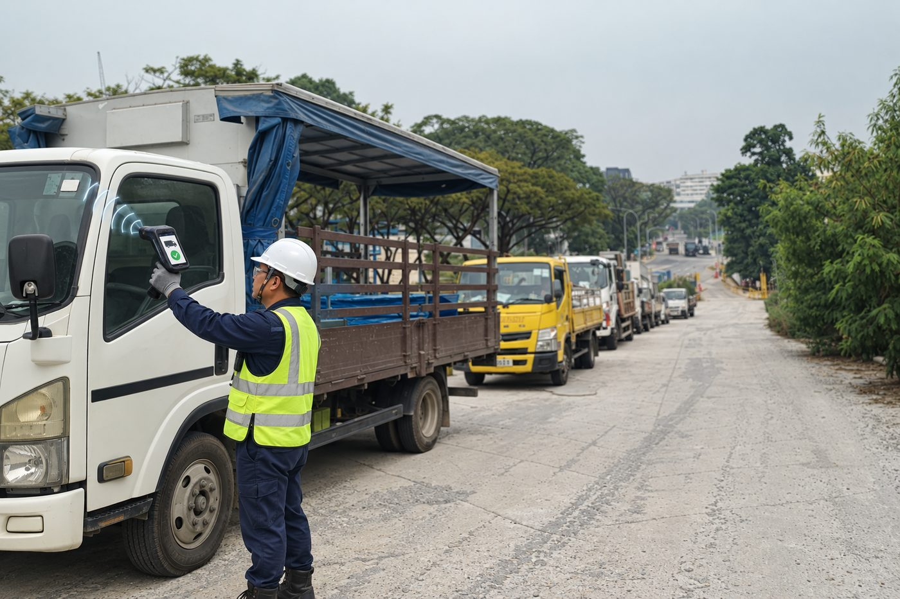
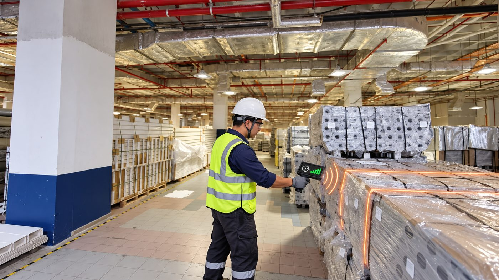
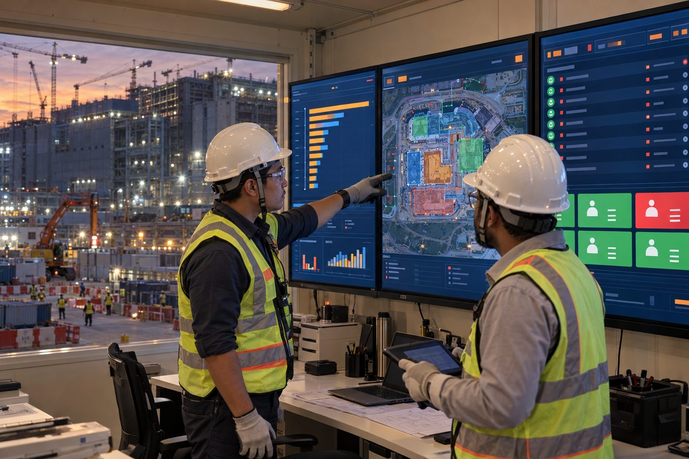

RFID control for workers, vehicles and materials
Know who is on site, and where they were last seen.
Smart Site gives every worker, vehicle and item one RFID tag, read in seconds by handhelds and fixed readers, and checked against one register.
Smart Site is at proposal and demo stage. Figures on this page are stated reader figures or illustrative; each site's real numbers are measured in a pilot.
One person. One ID. One tag.
One site, six controls
Handhelds and fixed readers cover the gate, vehicles, toolbox meetings, the store, controlled rooms and every floor.
Worker gate
The guard sweeps the queue. Each worker's photo, company, pass and induction status appear on screen. Green: entry logged. Red: stop.
Read range up to 15 m, as stated by the reader vendorVehicle lane
The guard scans the windscreen tag and the vehicle is checked against the register. Unknown vehicles raise an alert.
Log book: about 60 s per vehicle. Stated RFID check: 2 s.Toolbox meeting
The supervisor sweeps the crew's helmets. The roster is checked and the absentee list appears at once.
One sweep reads the whole crewStore and materials
Pick an item and sweep the store to find its tag. Withdrawals scan the worker's helmet, then the items.
Every withdrawal is tied to a named workerControlled rooms
A reader at the room, zone or hoist lets only trained, authorised workers pass. Refusals are logged for audits.
Log book: about 30 s per person. Stated RFID check: 2 s.Floors and mustering
Readers at stair cores and hoists keep a live count per floor. At the assembly point, a handheld sweep lists who is missing.
Shows the last checkpoint passed, not a live position


What Smart Site is, and the problem it is for
During construction, before permanent turnstiles exist, a large site is controlled by people writing in books. Guards log every entry by hand. Vehicles are checked by eye. Toolbox meetings are counted by head. Store withdrawals go on slips. In an emergency, the roll call is a paper list.
One cause sits behind all of it: identity and presence are written down by people, not captured by a system. Smart Site replaces that with one rule: one person, one ID, one tag. Each worker is enrolled once, with photo, company, trade, work pass, safety course and induction, and carries a combined QR and UHF sticker on their helmet. The tag itself holds a random ID and no personal data.
Handheld readers do most of the work, because gates and floors move during construction. Handhelds need no civil work and are useful from day one. Fixed readers are added later at chokepoints such as stair cores and hoists, and every read flows to one platform that checks it against the register and the rules.
What it does, function by function
- M1 Worker gateHandheld
- The guard sweeps the queue and the screen shows each worker's photo, name, company, pass and induction status. Green means the entry is logged; red means stop and call the supervisor. Every entry and exit is time-stamped.
- M2 Vehicle controlHandheld
- The guard scans a tamper-evident windscreen tag and the vehicle is checked against the register. Unknown vehicles raise an alert, and the site finally has a count of vehicles inside.
- M3 Toolbox meeting headcountHandheld
- The supervisor sweeps the crew's helmets in seconds. The reads are checked against the crew roster, absentees are listed at once, and attendance is saved per meeting, crew and date.
- M4 Store and materialsHandheld
- Select an item and sweep the store to locate its tag, guided by signal strength. Withdrawals scan the worker's helmet and then the items, so every withdrawal has a name on it. Stocktakes become a walk with a reader.
- M5 Controlled-area accessFixed reader and handheld
- A reader at the room, zone or hoist lets only trained, authorised workers pass. Refusals are logged, which gives an audit trail that a visual check never leaves.
- M6 Floor headcount and musteringFixed reader and handheld
- Readers at stair cores and hoists keep a live count per floor and zone. In an emergency, handhelds sweep the muster point and the platform lists who is still unaccounted for, with the last checkpoint they passed.
- The platformRegister, rules, records
- One register of workers, vehicles and materials. Rules check each read for a valid pass and the right training. Outputs are a gate screen, dashboards per gate, floor and zone, monthly reports and exports.

Who it is for. Main contractors and owners running large construction-stage sites, where crews change weekly and the gates have no permanent access control yet.
A shift on one screen
Drag the time to watch a shift arrive, spread across the site and leave. Then start a muster drill. All figures here are illustrative: a made-up site of 1,200 workers, not a live system.
Numbers on the plan are workers last read in each zone. A count shows the last checkpoint passed, not a continuous position.
Go deeper: the worker-movement dashboard
This is the sample dashboard from a Smart Site proposal, running on 10,000 synthetic worker records. Filter by subcontractor, work package and floor, open a worker to see their day as a numbered sequence of reads, play a shift back in 30-minute steps, and run a muster drill.
How it compares with the usual alternatives
| Criterion | Smart Site | Guard and log book | Turnstiles with biometrics | QR code scanning |
|---|---|---|---|---|
| Checking one worker | Read from a distance with no contact; the guard compares the face with the photo on screen | A name written in a book | The strongest identity proof, one person at a time | Close approach and careful aiming for each person |
| A whole crew or queue | One sweep reads many tags at once | One line at a time | One at a time through each lane | One at a time |
| Before permanent gates exist | Useful from day one; handhelds need no civil work | Works anywhere | Needs civil work, power and network, and is hard to move as gates shift | Works anywhere there is a scanner |
| Proof of who it was | Proves which helmet passed, not who wears it; relies on the photo check and spot checks | None | Strongest | Proves which code was shown |
| Vehicles and materials | The same tags and readers cover vehicles and store items | Separate books | People only | Possible, one item at a time |
| Where people are on site | The last checkpoint passed, per floor or zone; not continuous tracking | Unknown | Known at the gate only | Only where someone scans |
| Emergency muster | Sweep the assembly point and list who is missing | Roll call from paper lists | Knows who entered, not who has reached the muster point | Scan each person in turn |
| Records for an audit | Every read is time-stamped automatically | Handwritten and hard to search | Automatic at the gate | Automatic wherever a scan was made |
The comparison is against the typical setup in each category, not a named product. Individual products and agencies differ, so check the ones you are considering.
Where Smart Site is stronger
- It reads crowds, not individuals. A queue, a crew or a shelf is read in one sweep, which is where log books and one-at-a-time scanning lose the most time.
- It works before the building does. Handhelds need no turnstiles, power or civil work, so control starts in the construction stage.
- One system for people, vehicles and materials. The same tags, readers and register cover all three.
- It adds coverage that did not exist. Floor counts and mustering are usually outside any control system during construction.
- The tag carries no personal data. It holds a random ID. Personal details stay in the register, with access by role.
Pilot first, then scale
Each phase starts only when the one before it has passed its gate, and the first ask is small: one gate, one store, one contractor group.
- Survey and approvalsA joint site survey of gates, chokepoints, power and network, and the owner's approval for radio, ESD and IT.
- PilotOne gate, one store and one contractor group, with the gate, toolbox and store modules live and a two-week baseline.
- Full roll-outEvery worker enrolled, all gates and the vehicle lane covered, and the handheld modules running site-wide.
- Floors and musteringFixed readers at stair cores, hoists and controlled rooms, followed by muster drills.
Built to pass review. Workers are told the purpose at enrolment, the tag holds a random ID with no personal data, access to named records is by role, and retention is set before go-live. Readers are set to Singapore's UHF band of 917 to 925 MHz.
What the same backbone can carry next
Once every worker, vehicle and item has an ID and the site has readers, new controls are mostly a matter of rules and screens. The first three below are options in the Smart Site proposal today. The rest are directions we can build with a site that needs them.
Live location
BLE or UWB tags give a continuous position where the last checkpoint is not enough, such as lone working or confined spaces. Available as an option.
Face recognition at gates
Adds identity proof to the helmet tag where the risk justifies it. Available as an option.
Door interlocks
A controlled room that will not open for an untrained or unauthorised tag. Available as an option.
Tools and equipment
The store module's tags and readers extended to shared tools and plant: who has it, and when it is due back. A direction, not a product yet.
One record with BuiltSync
A gate read that also starts the day's attendance, and an expired certificate that turns the gate screen red. A direction, not a product yet.
Training that unlocks access
A course found in Course Atlas and completed becomes the authorisation a controlled room checks for. A direction, not a product yet.
See Smart Site on your own site.
Tell us about your sites and your workforce. We will show you the products on your own use case.